This project explores different techniques for image blending and fusion. My first task was to take an image and artificially sharpen it by increasing the signal of high frequency components. The result can be seen below. The original image, the low frequency components, the high frequency components, and the sharpened image.
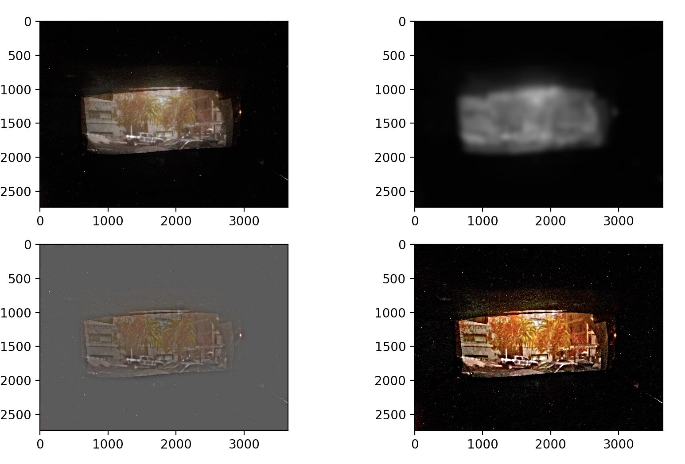Next, I was tasked with creating a composite image of low and high frequency components by aligning and blending two images together. Below, you can see that from far away while squinting, the low frequency image can be seen, while close up, the high frequency components can be seen. My results were a bit finicky for this part of the project. The low frequency image is a dog, and the high frequency image is a face.
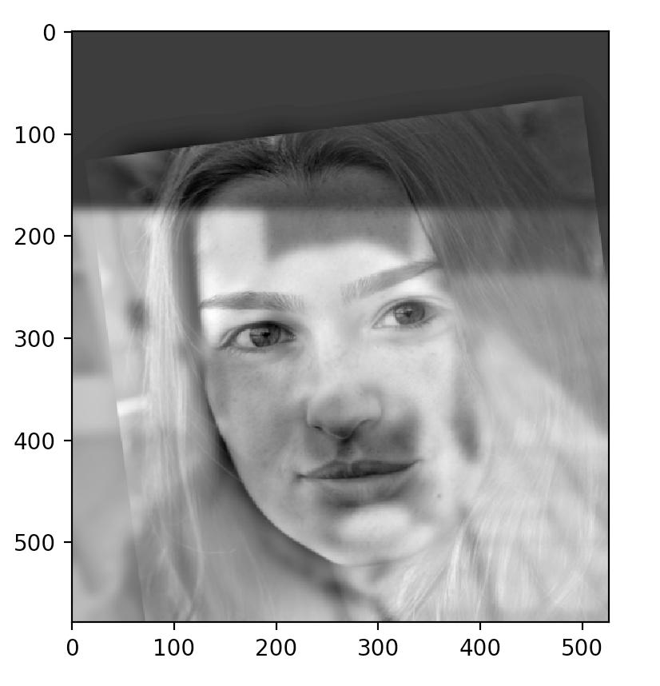Below, you can see the gaussian and laplacian stack for the above image. The gaussian stack on top consists of the image with a gaussian low pass filter applied over and over. The laplacian stack on bottom shows the difference between two adjacent elements in the gaussian pyramid, creating band-pass filters.
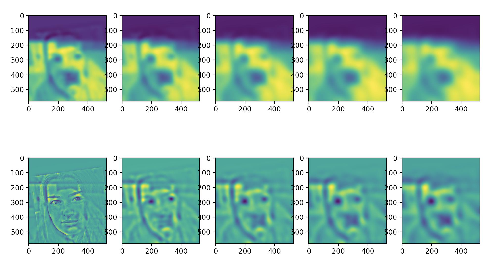Next, I used the idea of laplacian pyramids to create a smooth spline across images. Instead of a hard line when merging images, a smooth transition is created by blending the low and high frequency components of the images separately, and then reconnecting them. The results of combining an orange and an apple can be seen below.
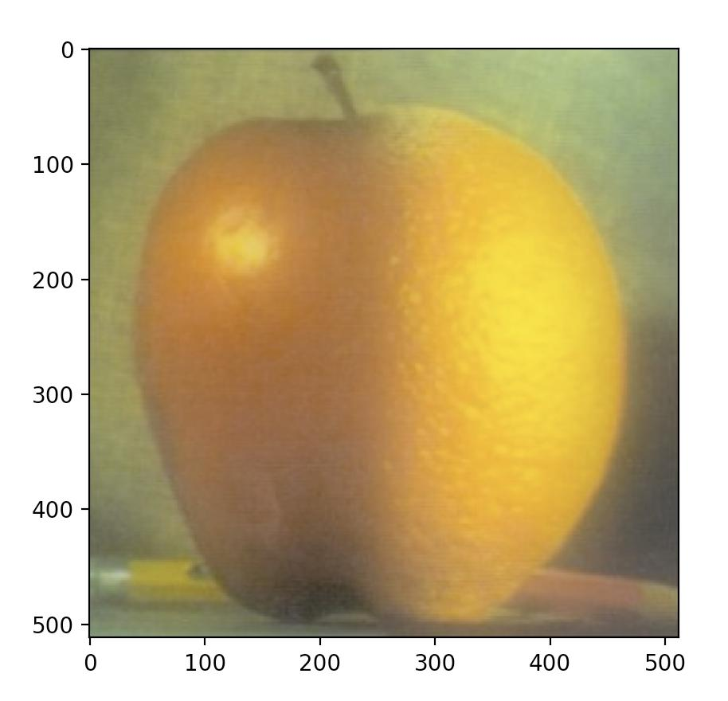The final portion of the project involved blending images from a given mask. For example, given this mask of mothra in both images, I can smoothly copy mothra into the image by minimizing the squared difference between pixels on the edge of the source image mask with the pixels on the edge of the target image mask while maintaining the source image gradient within the mask as much as possible.
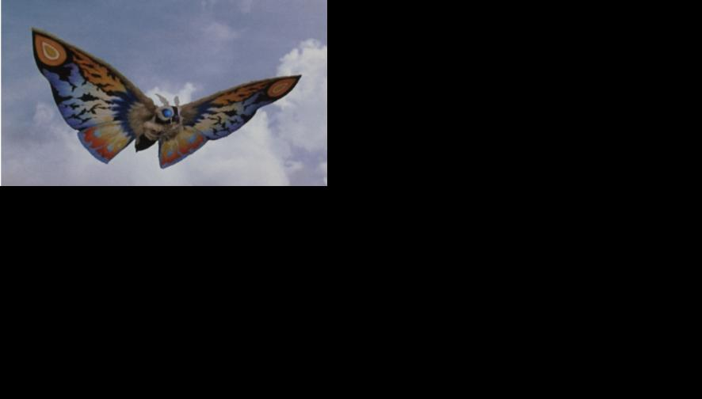 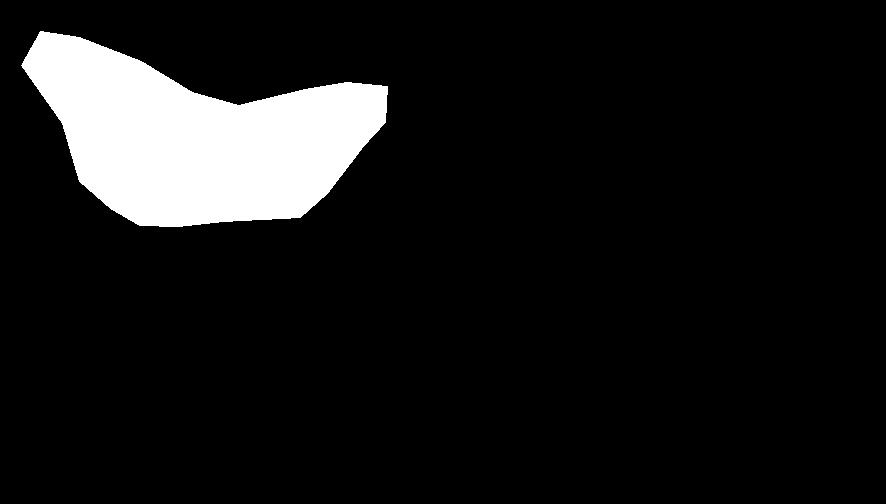Here are more examples:
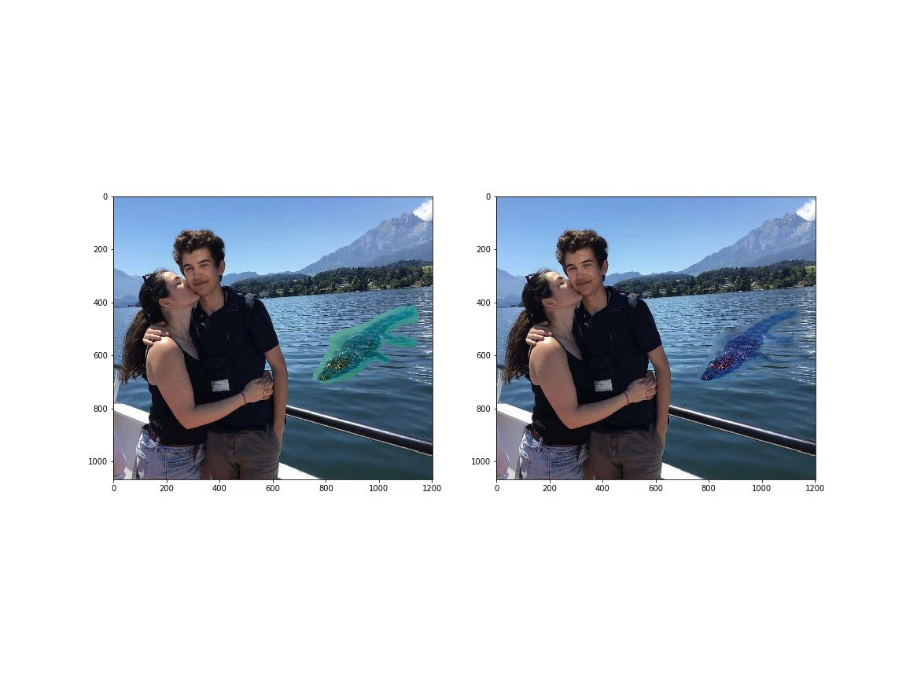 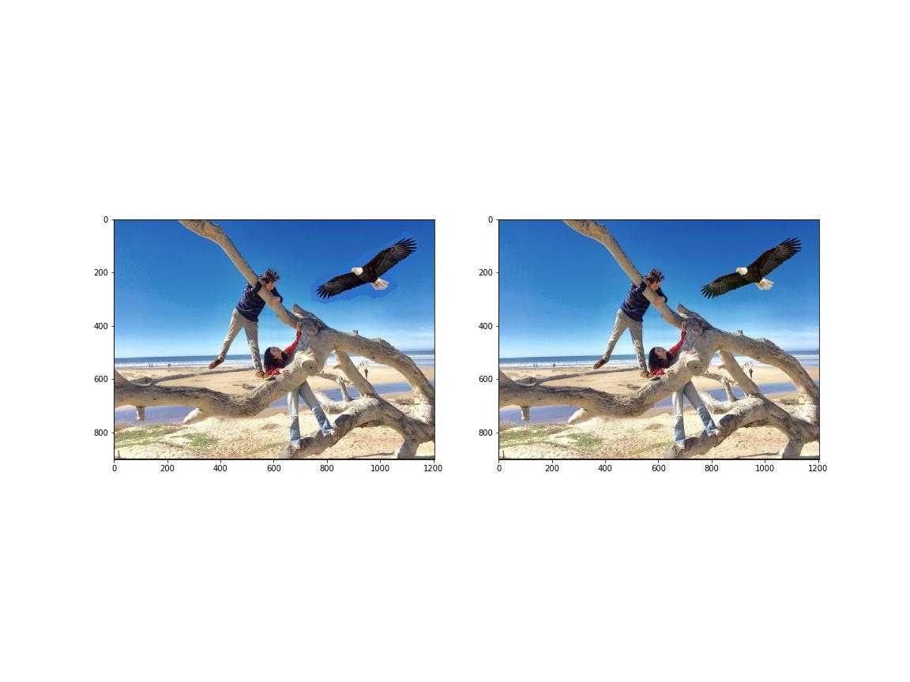 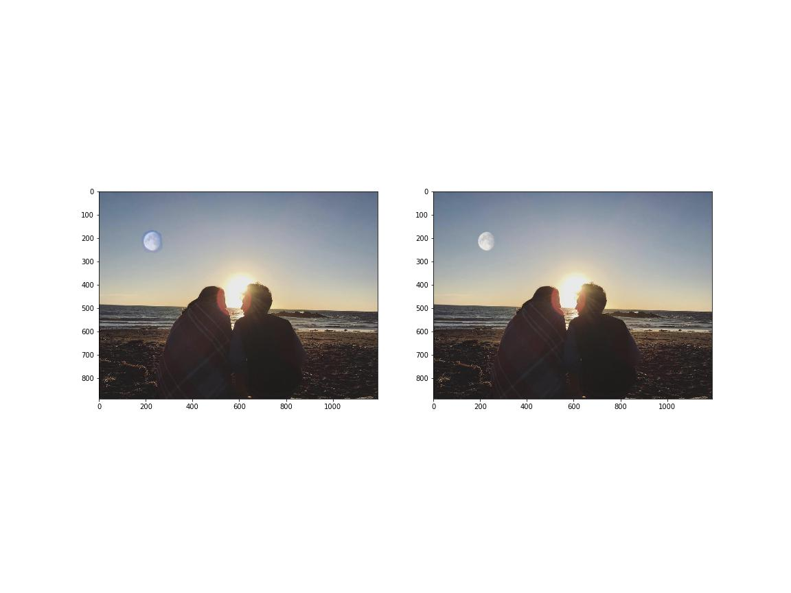 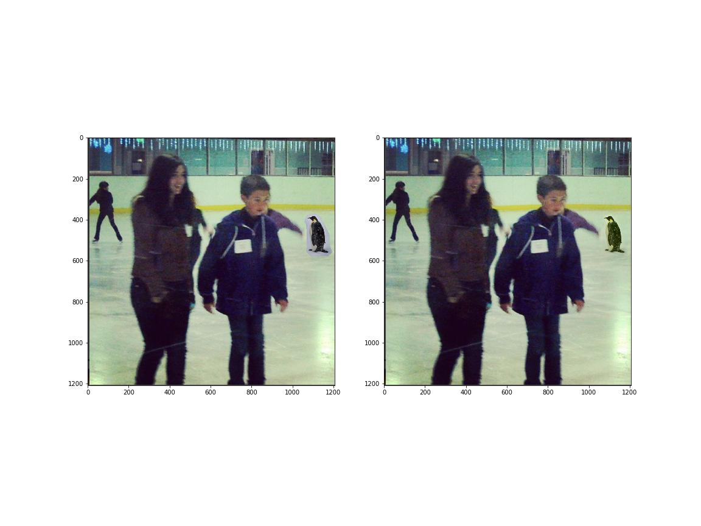 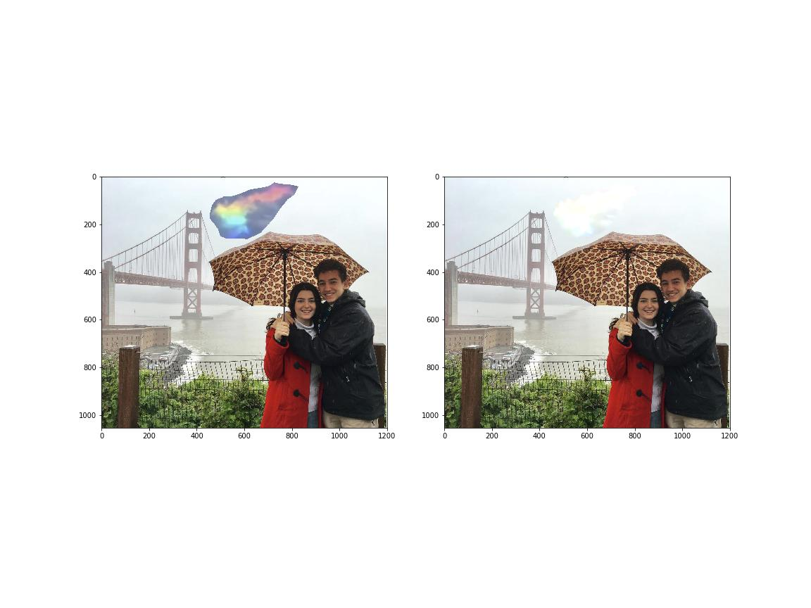 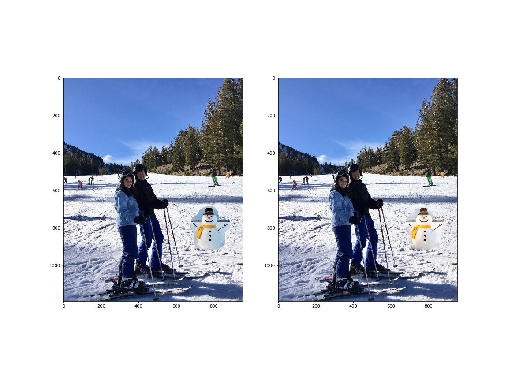 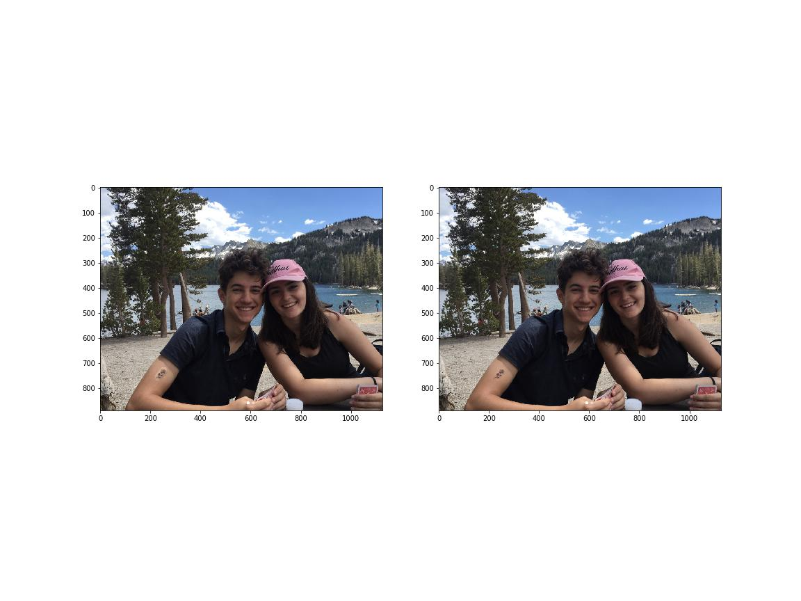